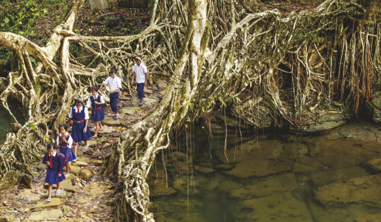
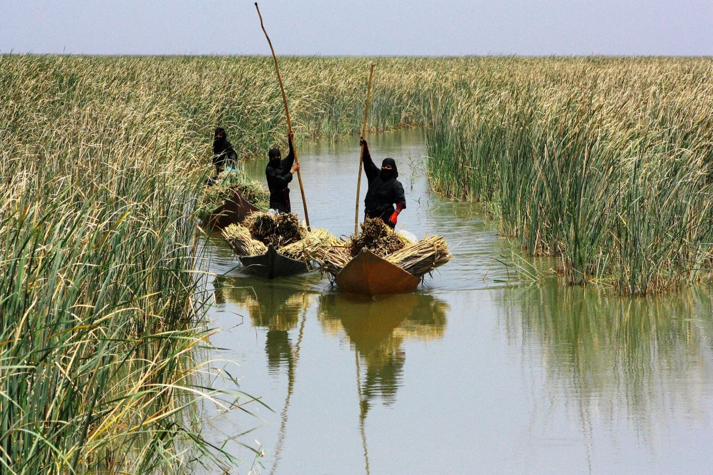
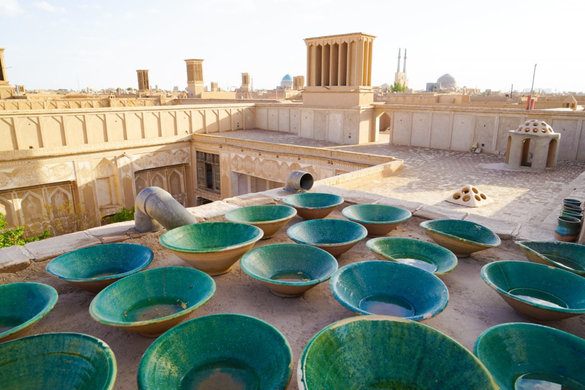

Green skills are the abilities needed to develop and support a resource-efficient society, such as permaculture, food production, food preservation, ecological construction, maintenance and renovation.
Solarpunk is a movement centered on using and being affected by the use of renewable resources with a focus on decentralization, community activism, social justice and civic empowerment. A recognition that economic, social, and ecological injustices are all deeply inter-connected.
Embracing approachable, personal technology and envisioning a world in which the detritus of consumer culture is appropriated and repurposed toward the reconstruction of a devastated ecology.

Permaculture is the science and practice of creating semi-permanent ecosystems of nature. The resilience of any such ecosystem is equal to it's diversity + interconnectedness. Permaculture design is a system of assembling conceptual, material and strategic components in a pattern which functions to benefit life in all its forms. It seeks to provide and sustain a secure place for living things on this earth.
Punk is a rejection of mainstream, corporate mass culture and its values. It manifests through direct action, such as protest or demonstration disruption, political violence, ecotage, street barricades, squatting, pirate radio, off-grid energy, graffiti, vandalism and public and business property destruction.

Solarpunk is also a reaction to the cynical and dystopian imaginaries that have come out of the fear of climate change. It is a way of tackling ecoanxieties and an invitation to complement the important work of climate scientists. Just as climate scientists have sought to warn the world about the dangers of climate change, Solarpunks are offering alternative visions to the helplessness often generated by such warnings.
We're destroying the world because we are, in a very literal and deliberate way, at war with it. People need more than to be made to feel stupid and guilty. They need more than a vision of doom. They need a vision of the world and of themselves that inspires them.
Green skills are the abilities needed to develop and support a resource-efficient society, such as permaculture, food production, food preservation, ecological construction, maintenance and renovation.

If we listened to people like you, more or less vagabonds and barefoot tramps, we would not have got beyond the bicycle. That's just it! we would ride bikes in the cities.Bernard Moitessier, The Long Way
incoming: 2024 adaptation salvage computing